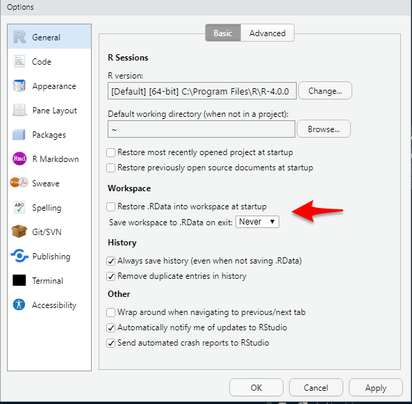

setting-up-r.RmdAuthor: Jimmy Briggs
Date: June 2, 2020
The purpose of this guide is to provide an in-depth walkthrough of the various tasks, installations, and processes involved with setting up your machine for using R.
The first step is to install R and RStudio from their respective websites listed below.
Install R from the main CRAN (Comprehensive R Archive Network) website: https://cran.r-project.org/.
On the page, select “Download R for Windows” > “Base” > “Download R 4.0.0 for Windows”
Note as of today the latest R version is 4.0.0
During installation, ensure that you are installing the 64-bit architecture version of R for increased RAM.
CRAN is composed of a set of mirror servers distributed around the world and is used to distribute R and R packages.
Don’t try and pick a mirror that’s close to you: instead use the cloud mirror, https://cloud.r-project.org, which automatically figures it out for you.
A new major version of R comes out once a year, and there are 2-3 minor releases each year. It’s a good idea to update regularly.
Upgrading can be a bit of a hassle, especially for major versions, which require you to re-install all your packages, but putting it off only makes it worse.
For more details see the section discussing how to efficiently migrate R packages between versions in this guide.
installr packge via installr::updateR() (run this from the native R console not RStudio).Install the free Version of RStudio Desktop for Windows from the RStudio Website here: https://rstudio.com/products/rstudio/download/.
RStudio is an integrated development environment, or IDE, for R programming.
RStudio is updated a couple of times a year. When a new version is available, RStudio will let you know.
It’s a good idea to upgrade regularly so you can take advantage of the latest and greatest features.
A range of Project Options and Global Options are available in RStudio from the Tools menu (accessible from the keyboard via Alt+T).
Most of these are self-explanatory but it is worth mentioning a few that can boost your programming efficiency:

Unticking this default prevents loading previously created R objects. This will make starting R quicker and reduce the chance of getting bugs due to previously created objects. For this reason, I recommend you untick this box.
Alternatively you can simply run this code:
require(usethis) usethis::use_blank_slate(scope = "user")
See code{?usethis::use_blank_slate for more information.
GIT/SVN project settings allow RStudio to provide a graphical interface to your version control system.
R version settings allow RStudio to ‘point’ to different R versions/interpreters, which may be faster for some projects.
Code editing options can make RStudio adapt to your coding style, for example, by preventing the autocompletion of braces, which some experienced programmers may find annoying. Enabling Vim mode makes RStudio act as a (partial) Vim emulator.
Diagnostic settings can make RStudio more efficient by adding additional diagnostics or by removing diagnostics if they are slowing down your work. This may be an issue for people using RStudio to analyze large datasets on older low-spec computers.
Appearance: if you are struggling to see the source code, changing the default font size may make you a more efficient programmer by reducing the time overheads associated with squinting at the screen. Other options in this area relate more to aesthetics. Settings such as font type and background color are also important because feeling comfortable in your programming environment can boost productivity. Go to Tools > Global Options to modify these.
To get the most out of R and RStudio it is helpful to install these additional software resources:
RTools
Git
A Git Client GUI (or just use RStudio)
Git LFS
Mercurial
Tex Distribution
Java
Pandoc
Node.js
Hugo
Inno
Here’s the code to install these additional resources:
if (!require(pacman)) install.packages("pacman") pacman::p_load(devtools, installr, tinytex, rstudioapi, magrittr, dplyr, pkgbuild) # configure RStudio settings ---------------------------------------------- # disable reloading of workspace between sessions usethis::use_blank_slate(scope = "user") # review system environment variables: Sys.getenv() # configure your R library path for R packages .libPaths() # copy packages to new R-version's windows library libdir_prior <- file.path("<enter prior win-library path here>") libdir_current <- file.path("<enter current win-library path here>") installr::copy.packages.between.libraries( from = libdir_prior, to = libdir_current ) # check .libPaths()[1] == libdir # configure dotfiles .Rprofile & .Renvrion -------------------------------- # review dotfiles usethis::edit_r_environ(scope = "user") # (RTools Path, github PAT, keys, etc.) usethis::edit_r_profile(scope = "user") # (various options for packages) # additional software --------------------------------------------- pkgbuild::setup_rtools() # Rtools installr::install.rtools() rstudioapi::restartSession() # git installr::install.git() rstudioapi::restartSession() # tinytex tinytex::install_tinytex() rstudioapi::restartSession() tinytex::use_tinytex() # java installr::install.java() # pandoc installr::install.pandoc() # node.js (only if desired) installr::install.nodejs() # github Git Client (only if desired) installr::install.github() # inno (only if desired) installr::install.inno()
Note that not all of these are required, however, I recommend at a minimum to install RTools, Git, Pandoc, and a Latex service.
I have provided an R script named R-Setup-Script.R with this guide that uses the installr package to help ease the process of installing all these extra resources.
This section discusses more advanced R related configurations such as:
For more advanced R developers you may want to further configure your development environement by customizing you R related dotfiles; specifically, your .Rprofile and .Renviron.
Here is what my minimal setup includes:
Additionally, you can configure keybinding for RStudio addins from RStudio and store them within the .R folder located in your R_USER path. To view this path run Sys.getenv("R_USER").
On a windows computer, you may need to adjust where the system chooses to look for various R related items on your system. For example, the path to your RTools bin executable, your HOME path, your library path for packages, and many other windows specific paths. Note the difference between SYSTEM PATHS and USER PATHS.
To add your system RTOOLS PATH to your .Renviron (easier than manually configuring within windows system settings) run the code:
cat('PATH = ${RTOOLS40_HOME}\\usr\\bin;${PATH}', file = fs::path(Sys.getenv("R_USER"), "/.Renviron"), append = TRUE)
YOu can also view the allocated memory RAM your machine allows R to use by running forgot the function...